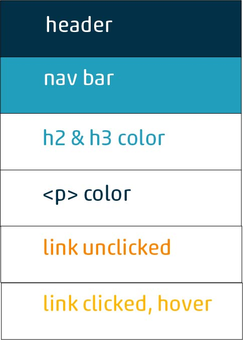
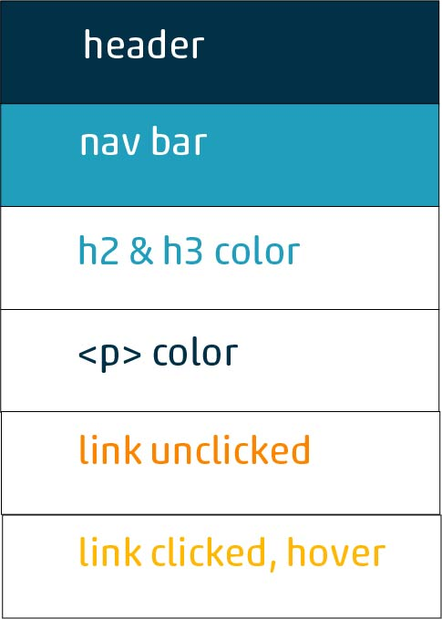

Color Scheme
With clean dark and light blues, white, and two clean oranges, this site will look clean, crisp, and authoritative.
With clean dark and light blues, white, and two clean oranges, this site will look clean, crisp, and authoritative.
